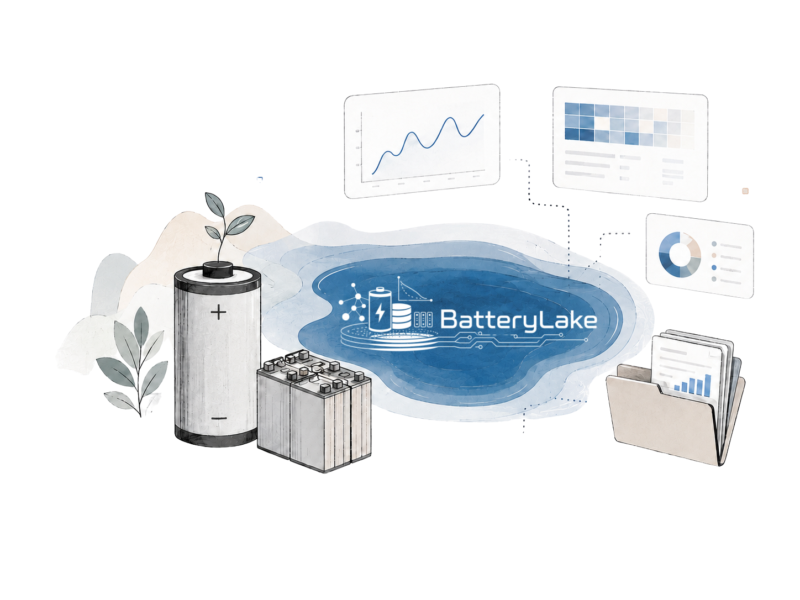

BatteryLake

BatteryLake unifies curated battery datasets,
standardized metadata, and cycle intelligence for
reproducible battery research.



Get the configured dataset, model architecture, and runtime environment.
bt_benchmark_soh_lstm.zipUnzip the package, open your terminal, and execute the following command to start local training.
unzip bt_benchmark_soh_lstm.zip cd bt_benchmark_soh_lstm mkdir -p data # copy the whole processed dataset folder into data/ first # example: cp -R /path/to/2019_Stanford_MIT_TRI_LFP_18650_MultiC_30T data/ python3 -m venv .venv source .venv/bin/activate pip install -r requirements.txt bash run_benchmark.sh
When training finishes, upload the generated output folder containing your results.
| Dataset name | Chem | Cells | Cycles | Select |
|---|
Formula FeaturesWaiting for confirmation
- 1
- 2Validate syntax
- 3Compute features
formula = Voltage V(t)
formula = Current I(t)
temperature = Gompert * (t) + 0 + C(t)
temperature = Temperature 0 + T(t)
Advanced configurationDetails
data/2026_NTUEEE_Ampace-Samsung_LFP-NMC_21700_2C_2C_25T/
split.json automatically.Package filesDetails
Terminal commandCopyable
unzip bt_benchmark_soh_lstm.zip cd bt_benchmark_soh_lstm mkdir -p data # copy the whole processed dataset folder into data/ first python3 -m venv .venv source .venv/bin/activate pip install -r requirements.txt bash run_benchmark.sh
Package ChecklistDetails
| Rank | Model | RMSE ↓ | MAE ↓ | MAPE ↓ | R2 ↓ |
|---|---|---|---|---|---|
| Upload outputs to populate the leaderboard. | |||||

| ID | Dataset | Status | Meta | Series | Summary | QC |
|---|
YYYY _ SOURCE _ CHEMISTRY _ FORMFACTOR _ CHRGC _ DCHRGC _ TEMPT
Examples
| Dataset | ref_name |
|---|---|
| NASA PCoE | 2007_NASA_PCoE_LCO_18650_1C_1C_25T |
| Stanford-MIT-TRI | 2019_Stanford_MIT_TRI_LFP_18650_MultiC_30T |
| NTU EEE Internal | 2026_NTUEEE_Ampace-Samsung_LFP-NMC_21700_2C_2C_25T |
| Imperial 21700 | 2024_Imperial_Kirkaldy_NMC_21700_MultiC_MultiT |
Field Vocabulary
Output Schema
Pipeline Scope
| Part | Scope | Datasets |
|---|---|---|
| Part 1 | Data Curation & ETL Pipeline | 01-38 + Internal + EEE |
| Part 2 | Benchmark Models & Evaluation | SOH + RUL ? 5 models |
Getting Started
Clone the repository and install the conda environment:
cd BatteryLake-Benchmark-DataPrep
conda create -n batterylake python=3.10
conda activate batterylake
pip install -r requirements.txt
Dataset Registry
All datasets are tracked in dataset_registry.csv with columns: dataset_id, dataset_name, data_category, doi, source_url, assigned_student, ref_name, status, metadata_done, timeseries_done, cycle_summary_done, dataset_note_done, qc_done, last_updated, notes.
Running ETL
Each dataset has a dedicated ETL script in scripts/ following the naming pattern etl_dataset_XX.py. Run with:
Evaluation
The benchmark evaluation framework uses evaluate.py and dataset_interface.py to run all five baseline models across selected datasets and split protocols.
Open benchmark infrastructure for battery PHM research.
BatteryLake Benchmark curates, standardizes, and evaluates lithium-ion battery cycling datasets from research labs worldwide, enabling fair comparison of machine learning models for state-of-health estimation and remaining useful life prediction.
Research and engineering contributors
BatteryLake combines battery-domain supervision, benchmark research, and frontend engineering into one reproducible platform.
Nanyang Technological University
Singapore
-
Voltage Range ValidationAll cell voltages within 2.0V-4.5V nominal operating range for the stated chemistry.
-
Energy Balance CheckCharge/discharge energy integral consistency; coulombic efficiency remains within 95-105% per cycle.
-
Capacity MonotonicityDegradation trajectory follows expected non-increasing trend with allowable recovery windows.
-
Temperature ConsistencyCell surface temperature must remain within 5°C of stated test condition; one dataset needs review.
-
Timestamp IntegrityMonotonically increasing timestamps with no negative intervals or unreasonable gaps above 24h.
-
Current Direction ConsistencyCharge and discharge current signs follow one convention throughout the dataset.
{
"dataset_id": "dataset_03",
"quality_score": {
"completeness": 0.97,
"consistency": 0.95,
"accuracy": 0.92,
"validity": 1.00
},
"overall": 0.96,
"gate": "ready_with_warning",
"checks": [
{ "name": "voltage_range", "passed": true },
{ "name": "temperature_consistency", "status": "review" },
{ "name": "capacity_mono", "passed": true }
],
"generated_at": "2026-04-28T12:00:00Z"
}
BatteryTwin agentic preprocessing has two separate jobs.
Task 1 converts true raw measurement files into timeseries and cycle_summary. Task 2 reads source pages, GitHub pages, DOI pages and papers to produce BatteryLake-compatible dataset_metadata.csv.
| Field | AI pre-fill | Evidence | Confidence | |
|---|---|---|---|---|
| Dataset type | Calendar aging | Folders named storage_25C; records contain periodic RPT blocks separated by multi-day rests. | 96% | |
| Data format | XLSX + CSV | 18 .xlsx workbooks and 6 exported .csv files detected. | 100% | |
| Year | 2023 | Workbook creation metadata and source README both state 2023. | 94% | |
| Source / lab | Zenodo / Example Lab | DOI and author affiliation found in README.md. | 91% | |
| Chemistry | NMC811 / graphite | Cell specification sheet names NMC811 cathode and graphite anode. | 93% | |
| Form factor | 21700 | INR21700 appears in filenames and cell specification. | 98% | |
| C-rate | Needs confirmation | RPT current is measurable, but nominal capacity is inconsistent across two source documents. | 42% | |
| Temperature | 25 °C, 45 °C | Folder names, chamber setpoint column and median sample temperatures agree. | 97% | |
| Cell count | 24 | 24 unique IDs after normalizing workbook names and cell_id values. | 99% | |
| Cell ID rule | Source filename | Stable pattern NMC_25C_C01; no conflicting in-file identifier. | 89% | |
| License | Needs confirmation | DOI resolves, but no explicit license text was found in the downloaded package. | 18% |
schema.json parsed successfully. Required fields will be selected according to dataset type.
No context file found. The skill will generate a draft from DOI, README and workbook metadata for user confirmation.
Executable check failed in the sampled environment. Built-in validation will run and the failure reason will be logged.
Existing outputs will be archived to a timestamped directory before new files are written.
Preprocessing Capabilities Reference
| Capability | Description | Status |
|---|---|---|
| Noise filtering | Savitzky–Golay, median, and rolling-window filters for voltage/current smoothing | Active |
| Outlier detection | IQR-based and domain-aware anomaly flagging (e.g. voltage spikes, current transients) | Active |
| Cycle segmentation | Automatic charge/discharge/rest detection from current polarity and voltage patterns | Active |
| Capacity integration | Trapezoidal and Simpson's rule integration for Ah capacity per half-cycle | Active |
| Multi-format ingestion | Support for CSV, Parquet, HDF5, MATLAB .mat, Excel, MACCOR, Arbin, Neware | Active |
| dQ/dV computation | Incremental capacity analysis with configurable voltage binning and smoothing | In dev |
| EIS preprocessing | Impedance spectra parsing, Nyquist/Bode extraction, ECM fitting | Planned |
Pick datasets, split cells, select models, and run comparable SOH/RUL benchmarks.
Upload custom signal formulas and compute cycle-level model inputs from raw curves.
Inspect feature importance, attention maps, and degradation signals after training.
- RESTful endpoints for dataset listing and download
- Parquet, CSV, and JSON export formats
- Embedded DOI citations and provenance
- Selective cell/cycle range queries
- SOH estimation and RUL prediction tasks
- 5+ baseline models (LR, RF, XGBoost, LSTM, Transformer)
- Random, temporal, and cross-cell split protocols
- RMSE, MAE, MAPE unified metric suite
- dQ/dV peak detection and tracking
- Health indicator extraction (IC, DV)
- Statistical feature pipeline
- EIS parameter fitting
- SHAP feature importance analysis
- Attention map visualization
- Gradient-based attribution
- Integrated gradients for deep models
Platform Roadmap
| Module | Type | Status |
|---|---|---|
| Data Download API | Open API | Available |
| Benchmark API | Open API | In Progress |
| Feature Engineering | E2E Application | Planned |
| Model Interpretation | E2E Application | Planned |
Contribution Workflow
Use our validation template to ensure your submission meets all requirements before opening a PR.
| Check Item | Requirement | Required? |
|---|---|---|
| Time-series columns | timestamp, voltage_V, current_A, capacity_Ah (minimum) | Required |
| Cell identifier | Unique cell_id for each battery unit | Required |
| Chemistry & form factor | Stated in metadata.json or README | Required |
| Nominal capacity | Manufacturer-rated capacity in Ah | Required |
| Temperature channel | Cell/ambient temperature per measurement | Preferred |
| Publication DOI | Link to associated paper or data repository | Preferred |
| EIS data | Impedance spectroscopy if available | Optional |